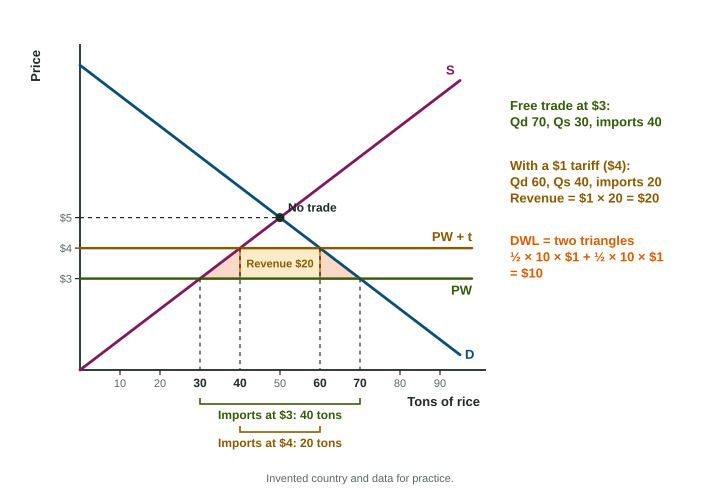

International Trade and Public Policy
When a small country opens to trade, its price moves to the world price.
Part 1 · Hook
Why this matters
Part 2 · Before you start
What this builds on
Part 3 · Prerequisite check
Quick check before you start
1. A country should produce the goods for which it has
- a comparative advantage, the lower opportunity cost
- an absolute advantage in every good
- the highest price
- the most buyers
Show the answer
Specializing by comparative advantage creates gains from trade.
- Correct: a comparative advantage, the lower opportunity cost:
- an absolute advantage in every good:
- the highest price:
- the most buyers:
2. Producer surplus is the area
- above supply and below the price, out to the quantity supplied
- under demand and above the price
- price times quantity
- between two prices
Show the answer
It is the price sellers receive minus the least they would accept.
- Correct: above supply and below the price, out to the quantity supplied:
- under demand and above the price:
- price times quantity:
- between two prices:
3. A per-unit tax collected from sellers
- raises the price buyers pay and lowers the quantity traded
- lowers the price buyers pay
- raises the quantity traded
- shifts demand right
Show the answer
Supply shifts up by the tax.
- Correct: raises the price buyers pay and lowers the quantity traded:
- lowers the price buyers pay:
- raises the quantity traded:
- shifts demand right:
Part 4 · See it
See it first

Part 5 · Step by step
How it works, step by step
- A small country opens to trade at a world price below its own pricethe domestic price falls to the world price
- The price fallsdomestic buyers want more and domestic firms supply less; imports fill the gap
- A tariff raises the domestic price above the world pricedomestic firms supply more, buyers want less, so imports fall
- Fewer units come in and domestic firms make units that cost more than importsthe government collects revenue on the remaining imports and two triangles of surplus are lost
Part 6 · Key ideas
Key ideas
- A small country takes the world price as given. Below its own price: it imports (Qd minus Qs at the world price). Above: it exports (Qs minus Qd).
- Importing: consumers gain, domestic producers lose, total surplus rises. Exporting: producers gain, consumers lose, total surplus rises.
- A tariff raises the domestic price by the tariff: domestic output rises, imports fall, consumers lose. Tariff revenue = tariff × imports after the tariff.
- A tariff's deadweight loss is two triangles: costly domestic production and buying given up.
- An import quota limits imports directly: the price rises as with a tariff, but the government collects no tariff revenue. (Quotas are not graphed in this course.)
Part 7 · Misconception
A common mistake
The wrong idea: Tariff revenue is the tariff times all the units sold in the country, or times the imports before the tariff.
What actually happens: Only imports pay the tariff, and only the imports that remain after it: tariff revenue is the tariff times (quantity demanded minus domestic quantity supplied) at the higher price.
Part 8 · Check yourself
Check yourself
Exam-style questions. Anything you miss goes into your review queue.
Graph
A small country at the world price with a tariff, areas lettered
1. In the graph, the country imports at the world price plus a tariff. Which area is the government's tariff revenue?
- Areas d and f
- Areas b and c
- Area e
- Areas d, e and f
Show the answer
Tariff revenue is the tariff per unit times the imports after the tariff: the rectangle between the world price and the world price plus the tariff, over the gap between domestic quantity supplied and quantity demanded at the higher price. That is area e.
- Areas d and f: Those two triangles are the deadweight loss.
- Areas b and c: Those go to domestic producers as extra producer surplus.
- Correct: Area e: Right: the tariff times the imports that remain.
- Areas d, e and f: That adds the deadweight loss triangles; only area e is collected.
2. In the graph, which areas are the deadweight loss of the tariff?
- Areas d and f
- Area e
- Areas b and c
- Area a
Show the answer
Area d is lost because domestic farms now make units that cost more than the world price; area f is lost because buyers no longer buy units they valued above the world price. Together, areas d and f.
- Correct: Areas d and f: Right: the two triangles.
- Area e: Area e is tariff revenue, which the government collects.
- Areas b and c: Those are transfers to domestic producers.
- Area a: Area a is consumer surplus that remains after the tariff.
Data
The rice market in Dornia
| Price per ton | Quantity demanded in Dornia | Quantity supplied by Dornian farms |
|---|---|---|
| $2 | 80 | 20 |
| $3 | 70 | 30 |
| $4 | 60 | 40 |
| $5 | 50 | 50 |
| $6 | 40 | 60 |
3. Dornia opens to trade at the world price of $3. How many tons of rice does it import per day?
Type a number. A four-function calculator is allowed, as on the exam.
Show the answer
At $3, Dornians want 70 tons and Dornian farms supply 30. Imports fill the gap: tons.
- Answer: 40
4. How much revenue does the $1 tariff raise per day, in dollars?
Type a number. A four-function calculator is allowed, as on the exam.
Show the answer
Tariff revenue is the tariff times the imports after the tariff: .
- Answer: 20
Scenario
Varrow opens its wheat market
Varrow, an invented small country, has not traded wheat with other countries. Inside Varrow, wheat sells for $180 a ton. The government removes its ban on trade. Wheat sells on the world market for $240 a ton, and Varrow is too small for its sales to change that price.
5. Once Varrow opens to trade, what happens in its wheat market?
- The price falls and Varrow imports wheat
- The price rises to $240 and Varrow exports wheat
- The price stays at $180 and Varrow sells abroad
- The price rises to $240 and Varrow imports wheat
Show the answer
The world price ($240) is above Varrow's own price ($180). The price in Varrow rises to $240: farms supply more, buyers want less, and Varrow exports the difference.
- The price falls and Varrow imports wheat: Imports happen when the world price is below the domestic price.
- Correct: The price rises to $240 and Varrow exports wheat: Right: a world price above the domestic price means exports.
- The price stays at $180 and Varrow sells abroad: Farmers will not sell at home for $180 when they can get $240 abroad.
- The price rises to $240 and Varrow imports wheat: At $240 Varrow's farms supply more than its buyers want.
6. A small country opens its market and will import the good. Draw the world price on the graph.
Work on the graph (it needs JavaScript), then check.
Show the answer
A country imports when the world price is below the price it would have without trade, so the world price line sits below the domestic equilibrium price.
- Key: see the explanation
Part 9 · Summary
Summary
Part 10 · Up next
What comes next
Part 11 · Connections